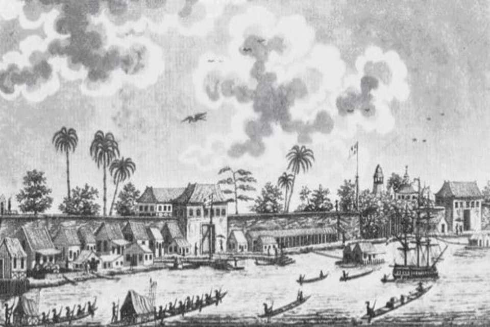
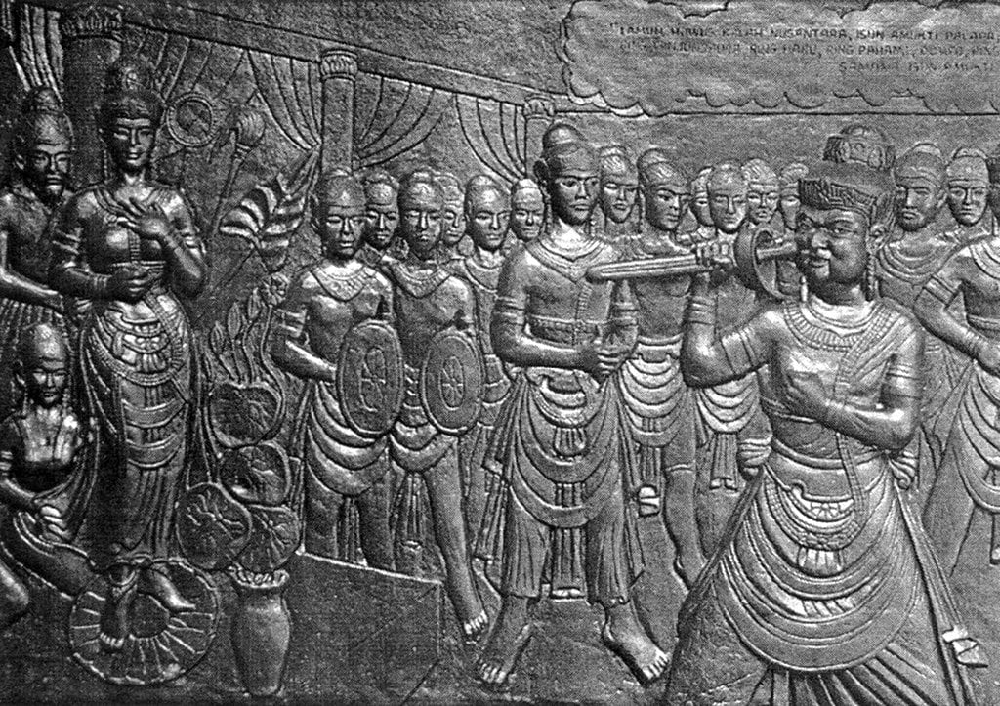
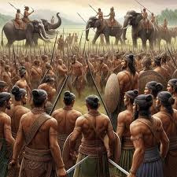
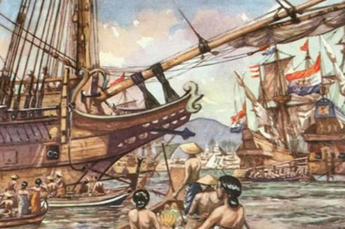

Faktor-faktor yang menyebabkan runtuhnya Kerajaan Samudra Pasai
Serangan Kerajaan Siam (1349-1406)

Terjadi pada masa pemerintahan Sultan Zaenal Abidin/Sultan Malik al-Tahir III, yang masa pemerintahannya kurang jelas.
Sultan Zainal Abidin I diculik dan Kerajaan Pasai dipaksa membayar ufti bunga emas.
Diserang Kerajaan Majapahit (1377)

Hayam Wuruk dari Majapahit khawatir atas kemajuan Kerajaan Samudra Pasai, terutama di bidang perniagaan dan penyebaran Islam karena ini membahayakan posisi Majapahit dalam perdagangan dan kekuatan politik di Nusantara.
Kerajaan Samudra Pasai berhasil menjadi pusat perdagangan strategis di Selat Malaka. Hal ini yang kemudian membuat Majapahit berambisi untuk menyatukan Nusantara dengan cara menyerang Kerajaan Samudera Pasai dan kerajaan ini berhasil ditaklukan.
Perang dengan Tentara Nuku (1406)

Bagian dari upaya Majapahit untuk menyatukan Nusantara, Samudra Pasai sebagai sasaran utama karena posisinya yang strategis di Selat Malaka.
Ditaklukan oleh Portugis (1521)

Portugis menyerang Kerajaan Samudra Pasai saat mulai masuk ke Nusantara dan berhasil menaklukan Samudra Pasai.
Berdirinya Kerajaan Aceh dan Malaka (1524)
Kerajaan Aceh dan Malaka menjadi pesaing utama dalam perdagangan di Selat Malaka dan Malaka menjadi pusat perdagangan baru yang lebih strategis.
Kerajaan Aceh, terutama setelah menguasai Malaka, menjadi ancaman bagi Samudra Pasai, bahkan akhirnya berhasil menguasai Samudra Pasai pada 1524.